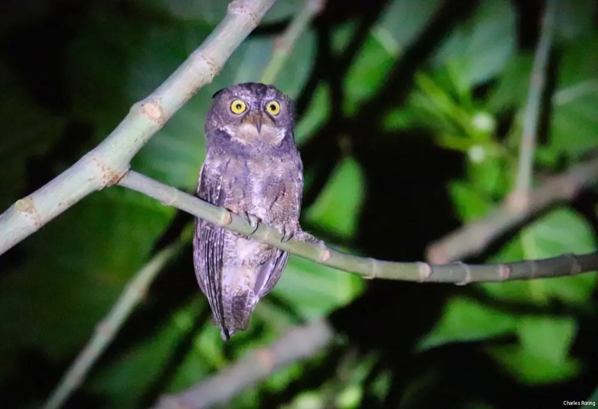
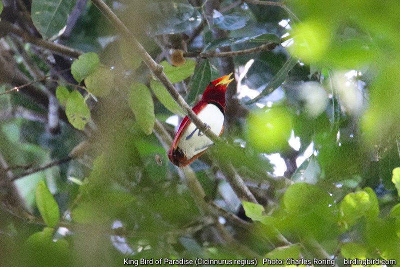

Minahasa is one of the regencies of the North Sulawesi Province of Indonesia. A lot of tourists go there to see its marine life, beautiful landscape and the wealth of biodiversity of its rainforest. One of their activity when traveling across the highland of Minahasa is hiking and birdwatching.
Sulawesi Scops Owl
There are a lot of birds that birdwatchers could see when walking in the forest, farmland and paddy fields. There are Hair-crested (White-eyed) Drongo, Sulawesi Drongo, Spotted Dove, Zebra Dove, Grey-cheeked Green Pigeon, Green Imperial Pigeon, White-faced Cuckoo Dove, Sulawesi Cuckoo Dove, Maroon-chinned Fruit Dove, Black-naped Oriole, Sulawesi Blue Flycatcher, Warbling White-eye, Black-fronted White-eye, Sooty-headed Bulbul, Chestnut Munia, Scaly-breasted Munia, Black-faced Munia, Gray-sided Flowerpecker, Yellow-sided Flowerpecker, Brush Cuckoo, Collared Kingfisher, Green-backed Kingfisher, Ruddy Kingfisher, Sulawesi Dwarf Kingfisher, Purple-winged Roller, White-necked Myna, and a lot more.
To watch birds, visitors need to bring binoculars. Famous brands that are mostly bought by birdwatchers include Fujifilm Fujinon, Swarovski, Leica, Bushnell, Celestron, and Nikon Monarch. Nowadays, more affordable Chinese brands such as Svbony, Apexel, and Asika can be ordered from online shops. Birdwatchers sometimes bring cameras that are lighter such as Nikon Coolpix P1000 or Canon SX70HS. For more serios photographers, D-SLR cameras with telephoto lenses will be their favorite choices. Nikon, Canon and Fujifilm still dominate this niche market.
Black-naped Oriole, Mountain (Warbling) White-eye, Crimson Sunbird, Sooty-headed Bulbul, Collared Kingfisher, White-breasted Woodswallow, Pale Blue Monarch.
Birding Sites
There are a lot of birdwatching sites in Minahasa peninsula. I mention some of them below:
Mount Mahawu - This site is suitable for watching birds in high elevation area such as Sulawesi Myzomela, Warbling White-eye, Crimson Sunbird, Scaly-breasted Kingfisher, and etc.
Mount Lengkoan - Predator such as Sulawesi Serpent Eagle, Sulawesi Hawk Eagle can sometimes be seen from this area. Other birds that can also be watched include Collared Kingfisher, Black-faced Munia, Sulawesi Pygmy Woodpecker, Sulawesi Blue Flycatcher, Sulawesi Cuckoo Dove.
Farmland and Paddy Fields of District Sonder - A large variety of birds could be watched in area including Sooty-headed Bulbul, Sahul Sunbird, Sulawesi Hanging Parrot, Chestnut Munia, Scaly-breasted Munia, Eurasian Treesparrow, White-nest Swiftlet, Barn Swallow, Cinnamon Bittern, White-breasted Woodswallow, White-browed Crake, Black-naped Oriole, Purple Heron, Cattle Egret, Little Egret, Zebra Dove, Finch-billed Myna, and etc.
Tangkoko Nature Reserve - This is a famous site for birdwatching or wildlife watching trips in general. The nature reserve is the recommended site for Lilac-cheeked Kingfisher, Green-backed Kingfisher, Ruddy- Kingfisher, Sulawesi Dwarf Kingfisher, and Great-billed Kingfisher (in Kalinaun area). Other birds that could be watched include Knobbed Hornbill, Sulawesi Hornbill, Purple-winged Roller, Sulawesi-crested Myna, and etc.
There are still a lot of birding sites in North Sulawesi province that we could explore. Tambun Maleo Sanctuary, Mount Ambang are birding sites in Kotamobagu that are worth visiting.
To visit Minahasa highland, visitors need to fly from their countries to Manado city in Indonesia.
Guiding Service
If you are interested in traveling to Minahasa regency to enjoy walking tour and birdwatching in its forest, farmland, paddy fields, and lakes, you could contact me (Charles Roring) by email to: peace4wp@gmail.com or by whatsapp to: +6281332245180.
Cendrawasih Raja atau King Bird of Paradise (Cicinnurus regius) adalah salah satu dari 42 spesies burung surga yang dikenal dalam dunia sains. Rata-rata ukuran jantannya adalah 16 centimeter dan betinanya 19 centimeter. Ini adalah burung surga terkecil di dataran utama Tanah Papua. Habitat utama burung Cendrawasih Raja adalah di hutan hujan tropis dataran rendah sampai ke lereng-lereng perbukitan.
Menurut peta di Buku Birds of New Guinea karya Thane K. Pratt dan Bruce M. Beehler, sebaran Burung Surga Raja adalah dataran utama Papua, Yapen, Salawati, Misool dan Aru.
Burung Surga Raja (Cendrawasih Raja)
Burung Cendrawasih Raja cukup umum di temukan di pepohonan yang ada tanaman tali atau tanaman menjalar dan menggelantung di pepohonan. Namun demikian, karena ukurannya yang relatif kecil, burung ini agak sulit untuk ditemukan. Wisatawan pengamat burung dan satwa liar perlu kejelian, dan kesabaran untuk mencarinya di sela-sela daun dan tali pohon yang bergelantungan.
Lokasi Wisata Pengamatan Burung
Di Papua Barat ada beberapa lokasi hutan yang menjadi tempat pengamatan Burung Cendrawasih Raja, beberapa di antaranya adalah:
Hutan Susnguakti di Kabupaten Manokwari. Hutan ini bisa dijangkau dengan kendaraan bermotor selama kurang lebih 1 jam lima belas menit. Selain Cendrawasih Raja, terdapat pula burung Cendrawasih Kuning Kecil, Toowa Cemerlang, Cekakak Pita Biasa, Pitta Perut Merah Papua atau Papuan Pitta, Paok Hijau (Hooded Pitta) dan lain sebagainya.
Karena lokasinya yang tidak terlalu jauh dari Kota Manokwari maka Hutan Susnguakti mudah dijangkau dengan kendaraan bermotor dengan waktu tempuh hanya 1 jam. Wisatawan asing menghabiskan waktu kurang lebih 3 - 5 hari di dalam hutan.
Kampung Klatomok. Hutan di Lembah Klasouw Kampung Klatomok - Kabupaten Sorong adalah lokasi yang ideal untuk pengamatan burung Cendrawasih dan berbagai spesies burung lainnya seperti Kakaktua Raja, Kakaktua Putih, Nuri Bayan (Eclectus Parrot), Raja Udang Paruh Kuning, Taun-taun, Kumkum, Jagal Papua, dan masih banyak lagi. Rata-rata wisatawan menghabiskan waktu kurang lebih 3 hari/ 2 malam di hutan ini untuk mengamati burung tropis dan satwa liar lainnya termasuk berbagai macam kupu-kupu, capung, kuskus, lao-lao (wallaby), rusa. Wisatawan dapat bisa melihat aktivitas budaya masyarakat asli yang tinggal di Kampung Klatomok seperti tokok sagu di hutan, cara membakar sagu serta cara menganyam tikar dari daun pandan.
Pegunungan Tambrauw - sebagai daerah konservasi, kabupaten ini memiliki banyak sekali kawasan hutan yang menjadi habitat Burung Cendrawasih Raja. Beberapa di antaranya termasuk hutan sekitar Pantai Weyos di Distrik Abun, Kampung Senopi, hutan sekitar ibukota kabupaten Fef, dan Lembah Ases. Burung Cendrawasih Kuning Kecil, Cendrawasih Belah Rotan, dan Toowa Cemerlang dapat ditemukan di Pegunungan Tambrauw.
Cagar Alam Wondiboy di Teluk Wondama. Ini adalah salah satu lokasi wisata pengamatan Cendrawasih Raja yang cukup baik karena bisa dijangkau dengan berjalan kaki. Karena Pegunungan Wondiboy tergolong terjal, wisatawan pengamat burung atau pencinta alam perlu mempersiapkan kondisi fisiknya dan perlengkapan hiking agar aktivitas wisata di hutan bisa berjalan lancar. Peralatan seperti binocular, kamera superzoom atau dslr dengan lensa telefoto perlu dibawa..
Burung Cendrawasih memainkan peran yang sangat penting bagi keseimbangan ekosistem hutan hujan tersebut. Bersama dengan satwa lainnya, burung cendrawasih memakan buah dan menyebar biji-bijian ke seluruh penjuru hutan. Cendrawasih juga memakan serangga sehingga membantu mengendalikan populasi serangga pemakan daun yang bisa saja merusak hutan hujan tropis jika jumlah serangganya terlalu banyak. Artikel ini ditulis oleh Charles Roring.